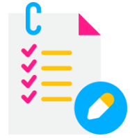
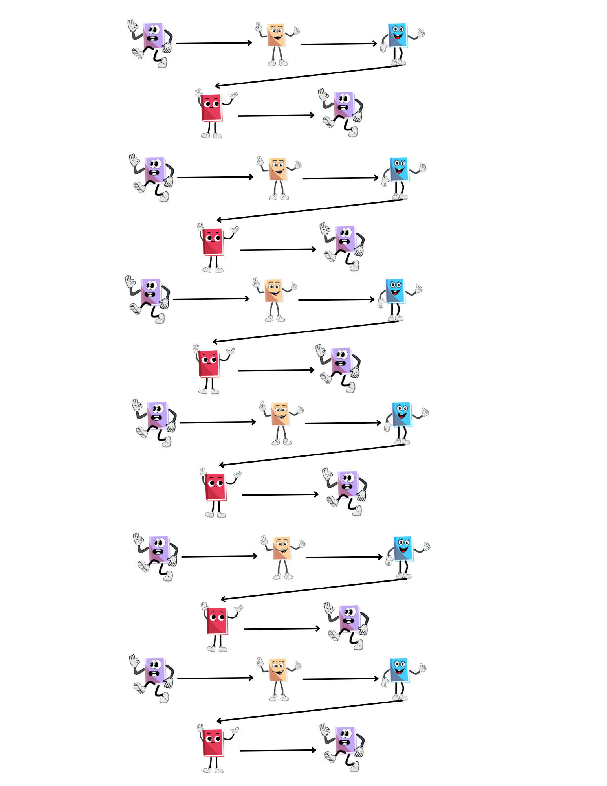
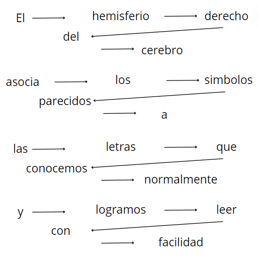

Actividad Fijaciones
Objetivo
- Deslizar los ojos evitando los pequeños saltos que se realizan al leer e incrementar su velocidad lectora.
Instrucciones

- Siga la dirección de las flechas haciendo pequeñas pausas en las figuras.
- Repita el deslizamiento durante el tiempo estipulado.

